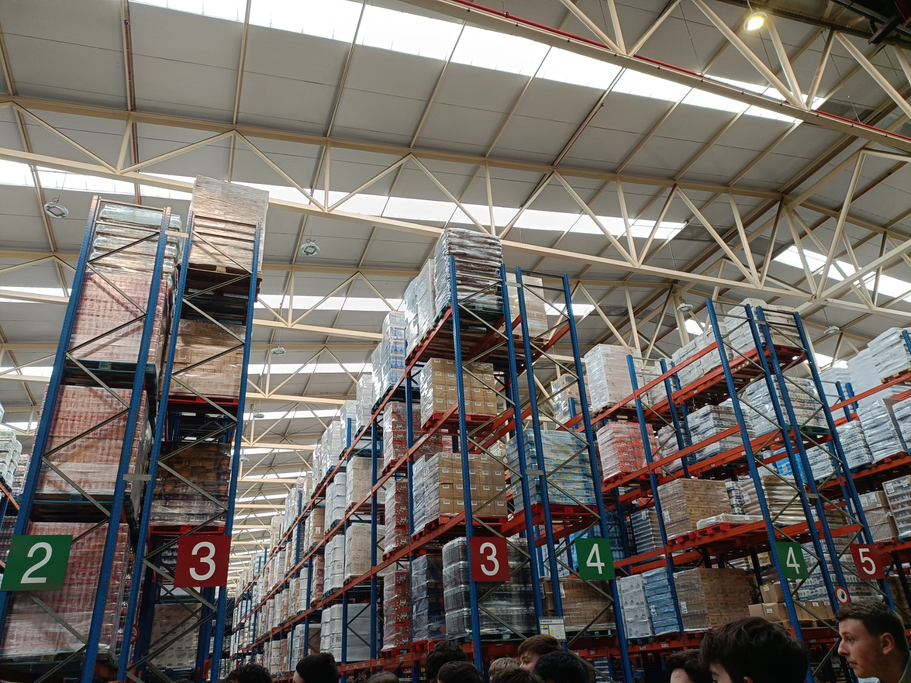
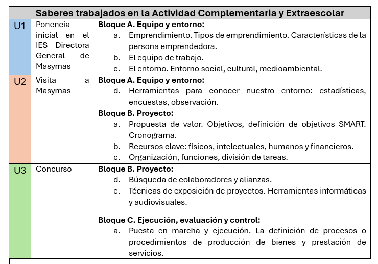

Como ya se ha mencionado, este curso el IES La Ería participó en la Vª edición del concurso escolar "Imagina tu empresa en Asturias" organizado por AEFAS. Como consecuencia de esta participación este curso se han realizado dos actividades complementarias y una actividad extraescolar que han permitido profundizar los saberes básicos trabajados a lo largo del curso:
Como parte del Vº concurso AEFAS "Imagina tu empresa en Asturias", el IES de La Ería se convirtió en sede de la ponencia inaugural del concurso.
Dicha ponencia tuvo lugar en el Salón de Actos del IES el 11 de febrero de 2026 y a ella asistieron representantes institucionales, profesores de Economía de varios IES participantes y el alumnado de La Ería de 3º de la ESO matriculado en PESE. La ponencia fue protagonizada por la Directora General de Hijos de Luis Rodríguez S.A. (Masymas), quien habló al alumnado del funcionamiento de las empresas familiares, las cualidades del emprendedor y las ventajas y dificultades que supone el emprendimiento. En el siguiente enlace al Instagram del IES se puede ver un pequeño recuerdo de la charla:
Asimismo, el 7 de abril el alumnado visitó la sede central de Masymas en Lugones donde les hablaron de Marketing y Logística, reforzando los saberes trabajados en la materia relativos a la organización empresarial. Allí pudieron ver de primera mano el funcionamiento de un almacén mecanizado.

La parte final de esta colaboración con AEFAS supone la participación en el concurso del alumnado. El plazo de presentación de candidaturas finalizó el 30 de abril de 2026 y en el proyecto presentado, los y las estudiantes abordaron parte de los saberes básicos de la Unidad 3.
